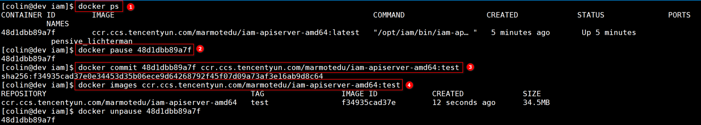
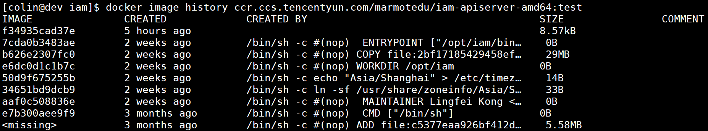

- 00 开篇词 从 0 开始搭建一个企业级 Go 应用.md.html
- 01 IAM系统概述：我们要实现什么样的 Go 项目？.md.html
- 02 环境准备：如何安装和配置一个基本的 Go 开发环境？.md.html
- 03 项目部署：如何快速部署 IAM 系统？.md.html
- 04 规范设计（上）：项目开发杂乱无章，如何规范？.md.html
- 05 规范设计（下）：commit 信息风格迥异、难以阅读，如何规范？.md.html
- 06 目录结构设计：如何组织一个可维护、可扩展的代码目录？.md.html
- 07 工作流设计：如何设计合理的多人开发模式？.md.html
- 08 研发流程设计（上）：如何设计 Go 项目的开发流程？.md.html
- 09 研发流程设计（下）：如何管理应用的生命周期？.md.html
- 10 设计方法：怎么写出优雅的 Go 项目？.md.html
- 11 设计模式：Go常用设计模式概述.md.html
- 12 API 风格（上）：如何设计RESTful API？.md.html
- 13 API 风格（下）：RPC API介绍.md.html
- 14 项目管理：如何编写高质量的Makefile？.md.html
- 15 研发流程实战：IAM项目是如何进行研发流程管理的？.md.html
- 16 代码检查：如何进行静态代码检查？.md.html
- 17 API 文档：如何生成 Swagger API 文档 ？.md.html
- 18 错误处理（上）：如何设计一套科学的错误码？.md.html
- 19 错误处理（下）：如何设计错误包？.md.html
- 20 日志处理（上）：如何设计日志包并记录日志？.md.html
- 21 日志处理（下）：手把手教你从 0 编写一个日志包.md.html
- 22 应用构建三剑客：Pflag、Viper、Cobra 核心功能介绍.md.html
- 23 应用构建实战：如何构建一个优秀的企业应用框架？.md.html
- 24 Web 服务：Web 服务核心功能有哪些，如何实现？.md.html
- 25 认证机制：应用程序如何进行访问认证？.md.html
- 26 IAM项目是如何设计和实现访问认证功能的？.md.html
- 27 权限模型：5大权限模型是如何进行资源授权的？.md.html
- 28 控制流（上）：通过iam-apiserver设计，看Web服务的构建.md.html
- 29 控制流（下）：iam-apiserver服务核心功能实现讲解.md.html
- 30 ORM：CURD 神器 GORM 包介绍及实战.md.html
- 31 数据流：通过iam-authz-server设计，看数据流服务的设计.md.html
- 32 数据处理：如何高效处理应用程序产生的数据？.md.html
- 33 SDK 设计（上）：如何设计出一个优秀的 Go SDK？.md.html
- 34 SDK 设计（下）：IAM项目Go SDK设计和实现.md.html
- 35 效率神器：如何设计和实现一个命令行客户端工具？.md.html
- 36 代码测试（上）：如何编写 Go 语言单元测试和性能测试用例？.md.html
- 37 代码测试（下）：Go 语言其他测试类型及 IAM 测试介绍.md.html
- 38 性能分析（上）：如何分析 Go 语言代码的性能？.md.html
- 39 性能分析（下）：API Server性能测试和调优实战.md.html
- 40 软件部署实战（上）：部署方案及负载均衡、高可用组件介绍.md.html
- 41 软件部署实战（中）：IAM 系统生产环境部署实战.md.html
- 42 软件部署实战（下）：IAM系统安全加固、水平扩缩容实战.md.html
- 43 技术演进（上）：虚拟化技术演进之路.md.html
- 44 技术演进（下）：软件架构和应用生命周期技术演进之路.md.html
- 45 基于Kubernetes的云原生架构设计.md.html
- 46 如何制作Docker镜像？.md.html
- 47 如何编写Kubernetes资源定义文件？.md.html
- 48 IAM 容器化部署实战.md.html
- 49 服务编排（上）：Helm服务编排基础知识.md.html
- 50 服务编排（下）：基于Helm的服务编排部署实战.md.html
- 51 基于 GitHub Actions 的 CI 实战.md.html
- 特别放送 Go Modules依赖包管理全讲.md.html
- 特别放送 Go Modules实战.md.html
- 特别放送 IAM排障指南.md.html
- 特别放送 分布式作业系统设计和实现.md.html
- 特别放送 给你一份Go项目中最常用的Makefile核心语法.md.html
- 特别放送 给你一份清晰、可直接套用的Go编码规范.md.html
- 直播加餐 如何从小白进阶成 Go 语言专家？.md.html
- 结束语 如何让自己的 Go 研发之路走得更远？.md.html
- 捐赠
46 如何制作Docker镜像？
你好，我是孔令飞。
要落地云原生架构，其中的一个核心点是通过容器来部署我们的应用。如果要使用容器来部署应用，那么制作应用的Docker镜像就是我们绕不开的关键一步。今天，我就来详细介绍下如何制作Docker镜像。
在这一讲中，我会先讲解下Docker镜像的构建原理和方式，然后介绍Dockerfile的指令，以及如何编写Dockerfile文件。最后，介绍下编写Dockerfile文件时要遵循的一些最佳实践。
Docker镜像的构建原理和方式
首先，我们来看下Docker镜像构建的原理和方式。
我们可以用多种方式来构建一个Docker镜像，最常用的有两种：
- 通过
docker commit命令，基于一个已存在的容器构建出镜像。 - 编写Dockerfile文件，并使用
docker build命令来构建镜像。
上面这两种方法中，镜像构建的底层原理是相同的，都是通过下面3个步骤来构建镜像：
- 基于原镜像，启动一个Docker容器。
- 在容器中进行一些操作，例如执行命令、安装文件等。由这些操作产生的文件变更都会被记录在容器的存储层中。
- 将容器存储层的变更commit到新的镜像层中，并添加到原镜像上。
下面，我们来具体讲解这两种构建Docker镜像的方式。
通过docker commit命令构建镜像
我们可以通过docker commit来构建一个镜像，命令的格式为docker commit [选项] [<仓库名>[:<标签>]]。
下图中，我们通过4个步骤构建了Docker镜像ccr.ccs.tencentyun.com/marmotedu/iam-apiserver-amd64:test：

具体步骤如下：
- 执行
docker ps获取需要构建镜像的容器ID48d1dbb89a7f。 - 执行
docker pause 48d1dbb89a7f暂停48d1dbb89a7f容器的运行。 - 执行
docker commit 48d1dbb89a7f ccr.ccs.tencentyun.com/marmotedu/iam-apiserver-amd64:test，基于容器ID48d1dbb89a7f构建Docker镜像。 - 执行
docker images ccr.ccs.tencentyun.com/marmotedu/iam-apiserver-amd64:test，查看镜像是否成功构建。
这种镜像构建方式通常用在下面两个场景中：
- 构建临时的测试镜像；
- 容器被入侵后，使用
docker commit，基于被入侵的容器构建镜像，从而保留现场，方便以后追溯。
除了这两种场景，我不建议你使用docker commit来构建生产现网环境的镜像。我这么说的主要原因有两个：
- 使用
docker commit构建的镜像包含了编译构建、安装软件，以及程序运行产生的大量无用文件，这会导致镜像体积很大，非常臃肿。 - 使用
docker commit构建的镜像会丢失掉所有对该镜像的操作历史，无法还原镜像的构建过程，不利于镜像的维护。
下面，我们再来看看如何使用Dockerfile来构建镜像。
通过Dockerfile来构建镜像
在实际开发中，使用Dockerfile来构建是最常用，也最标准的镜像构建方法。Dockerfile是Docker用来构建镜像的文本文件，里面包含了一系列用来构建镜像的指令。
docker build命令会读取Dockerfile的内容，并将Dockerfile的内容发送给Docker引擎，最终Docker引擎会解析Dockerfile中的每一条指令，构建出需要的镜像。
docker build的命令格式为docker build [OPTIONS] PATH | URL | -。PATH、URL、-指出了构建镜像的上下文（context），context中包含了构建镜像需要的Dockerfile文件和其他文件。默认情况下，Docker构建引擎会查找context中名为Dockerfile的文件，但你可以通过-f, --file选项，手动指定Dockerfile文件。例如：
$ docker build -f Dockerfile -t ccr.ccs.tencentyun.com/marmotedu/iam-apiserver-amd64:test .
使用Dockerfile构建镜像，本质上也是通过镜像创建容器，并在容器中执行相应的指令，然后停止容器，提交存储层的文件变更。和用docker commit构建镜像的方式相比，它有三个好处：
- Dockerfile 包含了镜像制作的完整操作流程，其他开发者可以通过 Dockerfile 了解并复现制作过程。
- Dockerfile 中的每一条指令都会创建新的镜像层，这些镜像可以被 Docker Daemnon 缓存。再次制作镜像时，Docker 会尽量复用缓存的镜像层（using cache），而不是重新逐层构建，这样可以节省时间和磁盘空间。
- Dockerfile 的操作流程可以通过
docker image history [镜像名称]查询，方便开发者查看变更记录。
这里，我们通过一个示例，来详细介绍下通过Dockerfile构建镜像的流程。
首先，我们需要编写一个Dockerfile文件。下面是iam-apiserver的Dockerfile文件内容：
FROM centos:centos8
LABEL maintainer="<[email protected]>"
RUN ln -sf /usr/share/zoneinfo/Asia/Shanghai /etc/localtime
RUN echo "Asia/Shanghai" > /etc/timezone
WORKDIR /opt/iam
COPY iam-apiserver /opt/iam/bin/
ENTRYPOINT ["/opt/iam/bin/iam-apiserver"]
这里选择centos:centos8作为基础镜像，是因为centos:centos8镜像中包含了基本的排障工具，例如vi、cat、curl、mkdir、cp等工具。
接着，执行docker build命令来构建镜像：
$ docker build -f Dockerfile -t ccr.ccs.tencentyun.com/marmotedu/iam-apiserver-amd64:test .
执行docker build后的构建流程为：
第一步，docker build会将context中的文件打包传给Docker daemon。如果context中有.dockerignore文件，则会从上传列表中删除满足.dockerignore规则的文件。
这里有个例外，如果.dockerignore文件中有.dockerignore或者Dockerfile，docker build命令在排除文件时会忽略掉这两个文件。如果指定了镜像的tag，还会对repository和tag进行验证。
第二步，docker build命令向Docker server发送HTTP请求，请求Docker server构建镜像，请求中包含了需要的context信息。
第三步，Docker server接收到构建请求之后，会执行以下流程来构建镜像：
- 创建一个临时目录，并将context中的文件解压到该目录下。
- 读取并解析Dockerfile，遍历其中的指令，根据命令类型分发到不同的模块去执行。
- Docker构建引擎为每一条指令创建一个临时容器，在临时容器中执行指令，然后commit容器，生成一个新的镜像层。
- 最后，将所有指令构建出的镜像层合并，形成build的最后结果。最后一次commit生成的镜像ID就是最终的镜像ID。
为了提高构建效率，docker build默认会缓存已有的镜像层。如果构建镜像时发现某个镜像层已经被缓存，就会直接使用该缓存镜像，而不用重新构建。如果不希望使用缓存的镜像，可以在执行docker build命令时，指定--no-cache=true参数。
Docker匹配缓存镜像的规则为：遍历缓存中的基础镜像及其子镜像，检查这些镜像的构建指令是否和当前指令完全一致，如果不一样，则说明缓存不匹配。对于ADD、COPY指令，还会根据文件的校验和（checksum）来判断添加到镜像中的文件是否相同，如果不相同，则说明缓存不匹配。
这里要注意，缓存匹配检查不会检查容器中的文件。比如，当使用RUN apt-get -y update命令更新了容器中的文件时，缓存策略并不会检查这些文件，来判断缓存是否匹配。
最后，我们可以通过docker history命令来查看镜像的构建历史，如下图所示：

其他制作镜像方式
上面介绍的是两种最常用的镜像构建方式，还有一些其他的镜像创建方式，这里我简单介绍两种。
- 通过
docker save和docker load命令构建
docker save用来将镜像保存为一个tar文件，docker load用来将tar格式的镜像文件加载到当前机器上，例如：
# 在 A 机器上执行，并将 nginx-v1.0.0.tar.gz 复制到 B 机器
$ docker save nginx | gzip > nginx-v1.0.0.tar.gz
# 在 B 机器上执行
$ docker load -i nginx-v1.0.0.tar.gz
通过上面的命令，我们就在机器B上创建了nginx镜像。
- 通过
docker export和docker import命令构建
我们先通过docker export 保存镜像，再通过docker import 加载镜像，具体命令如下：
# 在 A 机器上执行，并将 nginx-v1.0.0.tar.gz 复制到 B 机器
$ docker export nginx > nginx-v1.0.0.tar.gz
# 在 B 机器上执行
$ docker import - nginx:v1.0.0 nginx-v1.0.0.tar.gz
通过docker export导出的镜像和通过docker save保存的镜像相比，会丢失掉所有的镜像构建历史。在实际生产环境中，我不建议你通过docker save和docker export这两种方式来创建镜像。我比较推荐的方式是：在A机器上将镜像push到镜像仓库，在B机器上从镜像仓库pull该镜像。
Dockerfile指令介绍
上面，我介绍了一些与Docker镜像构建有关的基础知识。在实际生产环境中，我们标准的做法是通过Dockerfile来构建镜像，这就要求你会编写Dockerfile文件。接下来，我就详细介绍下如何编写Dockerfile文件。
Dockerfile指令的基本格式如下：
# Comment
INSTRUCTION arguments
INSTRUCTION是指令，不区分大小写，但我的建议是指令都大写，这样可以与参数进行区分。Dockerfile中，以 # 开头的行是注释，而在其他位置出现的 # 会被当成参数，例如：
# Comment
RUN echo 'hello world # dockerfile'
一个Dockerfile文件中包含了多条指令，这些指令可以分为5类。
- 定义基础镜像的指令：FROM；
- 定义镜像维护者的指令：MAINTAINER（可选）；
- 定义镜像构建过程的指令：COPY、ADD、RUN、USER、WORKDIR、ARG、ENV、VOLUME、ONBUILD；
- 定义容器启动时执行命令的指令：CMD、ENTRYPOINT；
- 其他指令：EXPOSE、HEALTHCHECK、STOPSIGNAL。
其中，加粗的指令是编写Dockerfile时经常用到的指令，需要你重点了解下。我把这些常用Dockerfile指令的介绍放在了GitHub上，你可以看看这个Dockerfile指令详解。
下面是一个Dockerfile示例：
# 第一行必须指定构建该镜像所基于的容器镜像
FROM centos:centos8
# 维护者信息
MAINTAINER Lingfei Kong <[email protected]>
# 镜像的操作指令
RUN ln -sf /usr/share/zoneinfo/Asia/Shanghai /etc/localtime
RUN echo "Asia/Shanghai" > /etc/timezone
WORKDIR /opt/iam
COPY iam-apiserver /opt/iam/bin/
# 容器启动时执行指令
ENTRYPOINT ["/opt/iam/bin/iam-apiserver"]
Docker会顺序解释并执行Dockerfile中的指令，并且第一条指令必须是FROM，FROM 用来指定构建镜像的基础镜像。接下来，一般会指定镜像维护者的信息。后面是镜像操作的指令，最后会通过CMD或者ENTRYPOINT来指定容器启动的命令和参数。
Dockerfile最佳实践
上面我介绍了Dockerfile的指令，但在编写Dockerfile时，只知道这些指令是不够的，还不能编写一个合格的Dockerfile。我们还需要遵循一些编写 Dockerfile的最佳实践。这里，我总结了一份编写 Dockerfile的最佳实践清单，你可以参考。
建议所有的Dockerfile指令大写，这样做可以很好地跟在镜像内执行的指令区分开来。
在选择基础镜像时，尽量选择官方的镜像，并在满足要求的情况下，尽量选择体积小的镜像。目前，Linux镜像大小有以下关系：
busybox < debian < centos < ubuntu。最好确保同一个项目中使用一个统一的基础镜像。如无特殊需求，可以选择使用debian:jessie或者alpine。在构建镜像时，删除不需要的文件，只安装需要的文件，保持镜像干净、轻量。
使用更少的层，把相关的内容放到一个层，并使用换行符进行分割。这样可以进一步减小镜像的体积，也方便查看镜像历史。
不要在Dockerfile中修改文件的权限。因为如果修改文件的权限，Docker在构建时会重新复制一份，这会导致镜像体积越来越大。
给镜像打上标签，标签可以帮助你理解镜像的功能，例如：
docker build -t="nginx:3.0-onbuild"。FROM指令应该包含tag，例如使用FROM debian:jessie，而不是FROM debian。充分利用缓存。Docker构建引擎会顺序执行Dockerfile中的指令，而且一旦缓存失效，后续命令将不能使用缓存。为了有效地利用缓存，需要尽量将所有的Dockerfile文件中相同的部分都放在前面，而将不同的部分放在后面。
优先使用
COPY而非ADD指令。和ADD相比，COPY功能简单，而且也够用。ADD可变的行为会导致该指令的行为不清晰，不利于后期维护和理解。推荐将
CMD和ENTRYPOINT指令结合使用，使用execl格式的ENTRYPOINT指令设置固定的默认命令和参数，然后使用CMD指令设置可变的参数。尽量使用Dockerfile共享镜像。通过共享Dockerfile，可以使开发者明确知道Docker镜像的构建过程，并且可以将Dockerfile文件加入版本控制，跟踪起来。
使用
.dockerignore忽略构建镜像时非必需的文件。忽略无用的文件，可以提高构建速度。使用多阶段构建。多阶段构建可以大幅减小最终镜像的体积。例如，
COPY指令中可能包含一些安装包，安装完成之后这些内容就废弃掉。下面是一个简单的多阶段构建示例：
FROM golang:1.11-alpine AS build
# 安装依赖包
RUN go get github.com/golang/mock/mockgen
# 复制源码并执行build，此处当文件有变化会产生新的一层镜像层
COPY . /go/src/iam/
RUN go build -o /bin/iam
# 缩小到一层镜像
FROM busybox
COPY --from=build /bin/iam /bin/iam
ENTRYPOINT ["/bin/iam"]
CMD ["--help"]
总结
如果你想使用Docker容器来部署应用，那么就需要制作Docker镜像。今天，我介绍了如何制作Docker镜像。
你可以使用这两种方式来构建Docker镜像：
- 通过
docker commit命令，基于一个已存在的容器构建出镜像。 - 通过编写Dockerfile文件，并使用
docker build命令来构建镜像。
这两种方法中，镜像构建的底层原理是相同的：
基于原镜像启动一个Docker容器。
在容器中进行一些操作，例如执行命令、安装文件等，由这些操作产生的文件变更都会被记录在容器的存储层中。
将容器存储层的变更commit到新的镜像层中，并添加到原镜像上。
此外，我们还可以使用 docker save / docker load 和 docker export / docker import 来复制Docker镜像。
在实际生产环境中，我们标准的做法是通过Dockerfile来构建镜像。使用Dockerfile构建镜像，就需要你编写Dockerfile文件。Dockerfile支持多个指令，这些指令可以分为5类，对指令的具体介绍你可以再返回复习一遍。
另外，我们在构建Docker镜像时，也要遵循一些最佳实践，具体你可以参考我给你总结的最佳实践清单。
课后练习
思考下，为什么在编写Dockerfile时，“把相关的内容放到一个层，使用换行符
\进行分割”可以减小镜像的体积？尝试一下，为你正在开发的应用编写Dockerfile文件，并成功构建出Docker镜像。
欢迎你在留言区与我交流讨论，我们下一讲见。
© 2019 - 2023 Liangliang Lee. Powered by gin and hexo-theme-book.